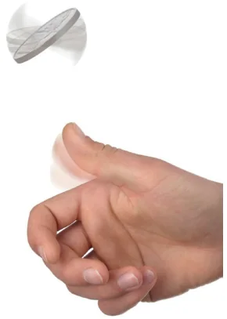
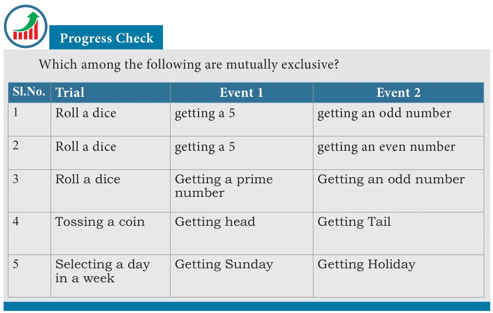

We have seen some important cases of events already. When the likelihood of happening of two events are same they are known as equally likely events.
- If we toss a coin, getting a head or a tail are equally likely events.
- If a dice is rolled, then getting an odd number and getting an even number are equally likely events, whereas getting an even number and getting 1 are not equally likely events.
When probability is 1, the event is sure to happen. Such an event is called a sure or certain event. The other extreme case is when the probability is 0, which is known as an impossible event.
If \(P(E) = 1\) then \(E\) is called Certain event or Sure event.
If \(P(E) = 0\) then \(E\) is known is an Impossible event.

Consider a "coin flip". When you flip a coin, you cannot get both heads and tails simultaneously. (Of course, the coin must be fair; it should not have heads or tails on both sides!). If two events cannot occur simultaneously (at the same time), in a single trial they are said to be mutually exclusive events. Are rain and sunshine mutually exclusive?
A dice is thrown. Let \(E\) be the event of getting an "even face". That is getting 2, 4 or 6. Then the event of getting an "odd face" is complementary to \(E\) and is denoted by \(E'\) or \(E^{c}\). In the above sense \(E\) and \(E'\) are complementary events.
Note
- The events \(E\) and \(E'\) are mutually exclusive. (how?)
- The probability of \(E\) + the probability of \(E' = 1\). Also \(E\) and \(E'\) are mutually exclusive and exhaustive.
- Since \(P(E) + P(E') = 1\), if you know any one of them, you can find the other.

Example 9.4
The probability that it will rain tomorrow is \(\frac{91}{100}\). What is the probability that it will not rain tomorrow?
Solution
Let \(E\) be the event that it will rain tomorrow. Then \(E'\) is the event that it will not rain tomorrow.
Since \(P(E) = 0.91\), we have \(P(E') = 1 - 0.91\) (how?)
\(= 0.09\)
Therefore, the probability that it will not rain tomorrow
\(= 0.09\)
Example 9.5
In a recent year, of the 1184 centum scorers in various subjects in tenth standard public exams, 233 were in mathematics. 125 in social science and 106 in science. If one of the student is selected at random, find the probability of that selected student,
(i) is a centum scorer in Mathematics (ii) is not a centum scorer in Science
Solution
Total number of centum scorers =1184
Therefore \(n(S) = 1184\)
(i) Let \(E_1\) be the event of getting a centum scorer in Mathematics.
Therefore \(n(E_1) = 233\),
\(P(E_1) = \frac{n(E_1)}{n(S)} = \frac{233}{1184}\)
(ii) Let \(E_2\) be the event of getting a centum scorer in Science.
Therefore \(n(E_2) = 106\),
\(P(E_2) = \frac{n(E_2)}{n(S)} = \frac{106}{1184}\)
\(P(E_2') = 1 - P(E_2)\)
\(= 1 - \frac{106}{1184}\)
\(= \frac{1078}{1184}\)